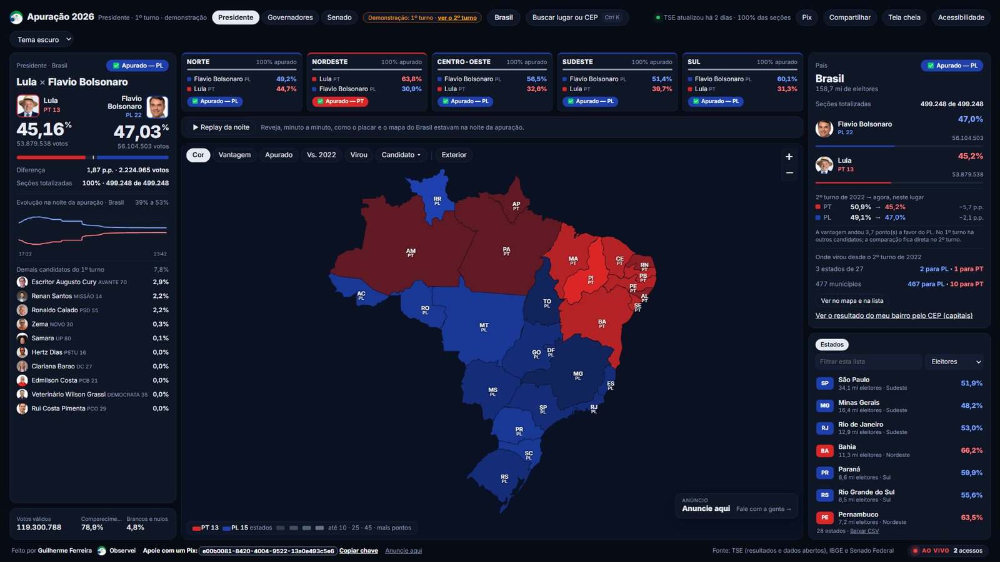

Eleições 2026 · 2º turno em 25 de outubro
Dashboard Eleições 2026
com Zabbix e Grafana
A apuração para Presidente com os dados oficiais do TSE: Brasil, estado, cidade e, nas 27 capitais, bairro e local de votação. Enquanto o 2º turno não começa, a demonstração mostra o resultado do 1º turno. Gratuito e sem cadastro.
Carregando o endereço…
Demonstração com o resultado do 1º turno de 2026.
O site do painelO que o painel mostra, quem fez e como anunciar nele: apuracao2026-vert.vercel.app.
Até o bairroNas 27 capitais, o voto por bairro e por local de votação, lido dos boletins de urna. Dá para procurar pelo CEP.
Como foi feitoArquitetura, segurança e testes no GitHub. Deixe uma estrela se gostou.
ContatoGuilherme Ferreira, SRE, pela Observei, consultoria de TI.
WhatsApp (11) 99494-6744
guigobrito@hotmail.com
LinkedIn · GitHub
WhatsApp (11) 99494-6744
guigobrito@hotmail.com
LinkedIn · GitHub
Apoie com um Pix
O painel é independente e gratuito. Chave aleatória, em nome de Guilherme Ferreira:
e00b0081-8420-4004-9522-13a0e493c5e6